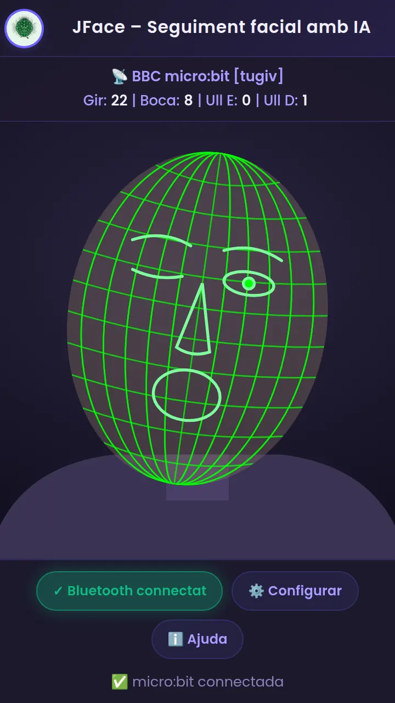
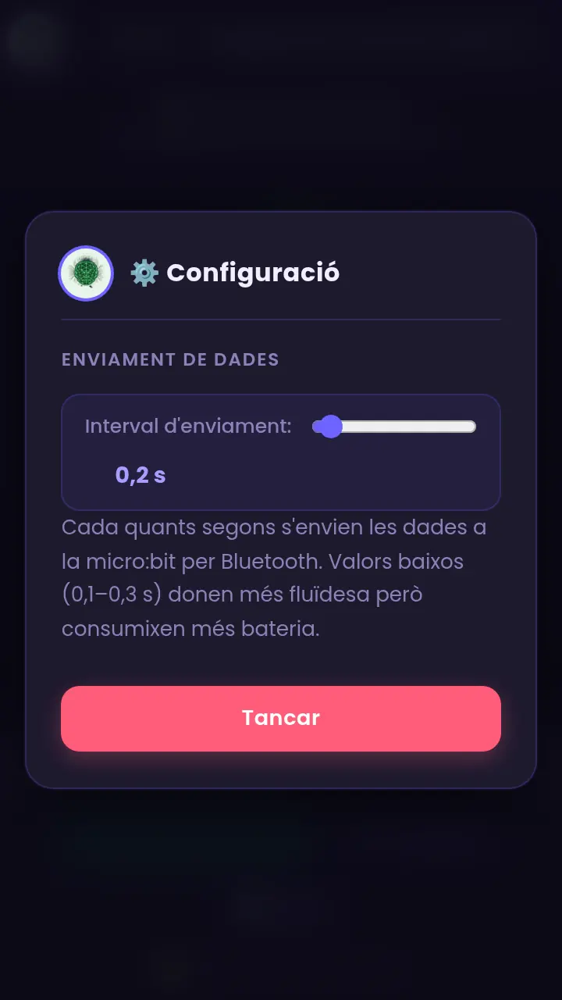
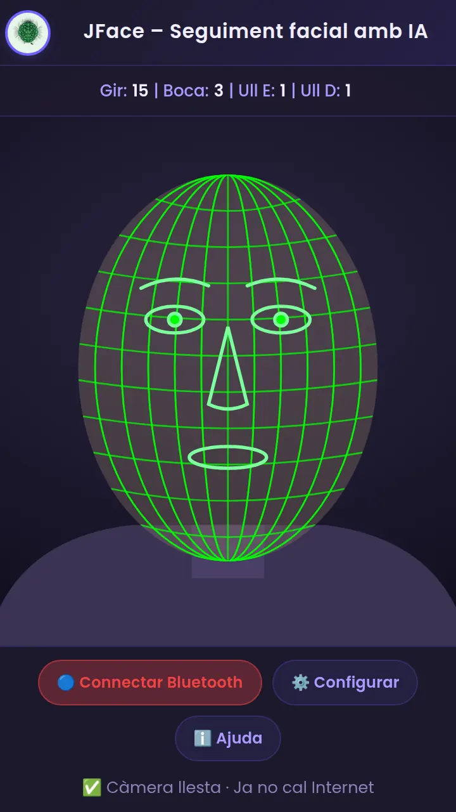

JFace, pas a pas
Del programa de blocs en MakeCode fins als servos i els LEDs: Bluetooth sense vinculació, connexió amb l'app, configuració i resultat.
Què necessites
JFace llig la teua cara amb la càmera del mòbil i envia per Bluetooth quatre dades: cap girat, obertura de la boca i l'estat de cada ull. En esta guia farem que la micro:bit:
- gire un servomotor de 180° segons el gir del cap (mapeig de dades),
- òbriga i tanque la boca d'un segon servo segons l'obertura de la boca,
- mostre els ulls com a LEDs (0 = apagat, 1 = encés).
Material
- Una micro:bit (V2 recomanada; la V1 també val, però té poca memòria).
- 2 servomotors de 180° (tipus SG90 o MG90) i un portapiles de 4×AA per alimentar-los.
- Cables dupont / pinces de cocodril. Opcional: 2 LEDs i 2 resistències de 220 Ω.
- Un mòbil Android amb Chrome (JFace no funciona en iPhone/iPad) i un ordinador per a programar amb MakeCode.
Com viatja la informació:
Crea un projecte en MakeCode
Obri makecode.microbit.org en el navegador (en un ordinador o en un Android amb Chrome). Prem New Project i posa-li un nom, per exemple jface.
Activa el Bluetooth: afig l'extensió
Per defecte, MakeCode no inclou els blocs de Bluetooth. Cal afegir l'extensió:
- Al final de la barra de blocs, prem Extensions (o ⚙ → Extensions).
- Escriu bluetooth en el cercador i prem la targeta bluetooth.
- Torna al projecte: ja tens la categoria Bluetooth (color blau).
Bluetooth services
Fes el projecte «sense vinculació»
Este és el pas que més falla. Per defecte, una micro:bit amb Bluetooth exigeix vincular-se abans de connectar (el clàssic dibuix amb el patró de LEDs). Des d'una pàgina web això no funciona bé, així que cal fer un projecte sense vinculació:
- Prem l'engranatge ⚙ (dalt a la dreta) → Project Settings.
- Marca No Pairing Required: Anyone can connect via Bluetooth.
- Tanca el diàleg. El canvi es guarda dins del projecte, i s'aplica en descarregar-lo.
Entén el missatge que envia JFace
Quan detecta un canvi apreciable, JFace envia un text de 6 dígits seguit d'un salt de línia. Per exemple, 151010:
| Camp | Què significa | Valors típics |
|---|---|---|
| Gir (dígits 1–2) | Gir horitzontal del cap | De cara ≈ 15; en girar cap a un costat baixa (≈ 5) i cap a l'altre puja (≈ 25) |
| Boca (dígits 3–4) | Obertura de la boca | ≈ 0 tancada; puja en obrir-la (≈ 10 molt oberta; depén de la distància a la càmera) |
| Ull E (dígit 5) | Ull esquerre del panell de JFace | 0 tancat · 1 obert |
| Ull D (dígit 6) | Ull dret del panell de JFace | 0 tancat · 1 obert |
Quan la cara desapareix de la càmera, JFace envia una sola vegada el text 0.
Programa (1/4): servei UART i avís de connexió
Arrossega estos blocs a l'àrea de treball:
- A on start posa bluetooth uart service (categoria Bluetooth). És el que activa la «ràdio de text» que usa l'app.
- Afig on bluetooth connected i on bluetooth disconnected (també de Bluetooth). Dins, show icon ✔ / ✘, pause 500 i clear screen (categoria Basic). Així sabràs si l'app està connectada.
Programa (2/4): llegir el missatge i separar els camps
Ara el bloc que s'executa cada vegada que arriba un missatge:
- Afig bluetooth on data received [new line] (Bluetooth). Deixa el delimitador en new line: l'app acaba cada missatge amb un salt de línia.
- Crea 5 variables (categoria Variables → Make a Variable): rebut, gir, boca, ullE, ullD.
- Dins del bloc: set rebut to bluetooth uart read until [new line].
- Afig un if … else if (Logic; amb ⚙ afig l'«else if»). Primer cas: rebut = "0" (cara perduda; el deixarem buit fins al pas «Mapeig»). Segon cas: length of rebut ≥ 6 (missatge complet).
- Dins del segon cas, cada dada es talla amb «substring of … from … of length …» (Text) i es converteix en número amb parse to integer (Text).
Programa (3/4): els ulls es mapegen a LEDs (0/1)
Els ulls ja arriben com a 0 o 1, així que el «mapeig» és directe: 1 → LED encés, 0 → LED apagat. Usarem dos LEDs de la fila central de la pantalla:
- ull E → LED de columna 1, fila 2 (
x = 1, y = 2). - ull D → LED de columna 3, fila 2 (
x = 3, y = 2).
Dins del segon cas (length ≥ 6), afig dos if … else (Logic):
Variant: LEDs externs (0/1 directe a un pin)
Si vols llums de veritat (necessites una placa d'expansió per a accedir als pins P2 i P8), substitueix els dos if per escriure el valor 0/1 directament al pin:
pins.digitalWritePin(DigitalPin.P2, ullE) pins.digitalWritePin(DigitalPin.P8, ullD)
Programa (4/4): mapeig de les dades als servos de 180°
Un servo de 180° entén angles de 0 a 180, però JFace envia el gir del cap com un número que va, més o menys, de 5 a 25. Cal traduir un interval a l'altre: això és el mapeig.
En MakeCode són dos blocs encaixats (categoria Math):
- map [gir] from low 5 high 25 to low 0 high 180: fa la regla de tres.
- constrain [...] between 0 and 180: talla el resultat perquè mai passe de 0–180 (si el cap gira més del compte, el servo no forçarà).
Els dos blocs van dins de servo write pin … to … (Advanced → Pins). Afig-los al final del segon cas:
Taula del gir (P0): map(gir, 5, 25, 0, 180)
| Valor «gir» | Angle del servo |
|---|---|
| 5 | 0° |
| 10 | 45° |
| 15 | 90° |
| 20 | 135° |
| 25 | 180° |
Boca (P1): map(boca, 0, 10, 0, 180)
| Valor «boca» | Angle del servo |
|---|---|
| 0 | 0° |
| 2 | 36° |
| 5 | 90° |
| 8 | 144° |
| 10 | 180° |
jface/js/video_facial_tracking.js (les comparacions > 4 i > 2).I si la cara desapareix?
Torna al primer cas (rebut = "0") i posa el que vols que faça la micro:bit sense cara: servos al centre (gir 90°), boca tancada i LEDs apagats:
El programa complet (blocs + codi)
Així queda tot junt. Pots copiar el codi, anar a la pestanya JavaScript de MakeCode, esborrar-ne el contingut, apegar-hi el codi i tornar a Blocks: apareixeran els blocs de dalt.
let rebut = ""
let gir = 0
let boca = 0
let ullE = 0
let ullD = 0
bluetooth.startUartService()
bluetooth.onBluetoothConnected(function () {
basic.showIcon(IconNames.Yes)
basic.pause(500)
basic.clearScreen()
})
bluetooth.onBluetoothDisconnected(function () {
basic.showIcon(IconNames.No)
basic.pause(500)
basic.clearScreen()
})
bluetooth.onUartDataReceived(serial.delimiters(Delimiters.NewLine), function () {
rebut = bluetooth.uartReadUntil(serial.delimiters(Delimiters.NewLine))
if (rebut == "0") {
pins.servoWritePin(AnalogPin.P0, 90)
pins.servoWritePin(AnalogPin.P1, 0)
basic.clearScreen()
} else if (rebut.length >= 6) {
gir = parseInt(rebut.substr(0, 2))
boca = parseInt(rebut.substr(2, 2))
ullE = parseInt(rebut.substr(4, 1))
ullD = parseInt(rebut.substr(5, 1))
pins.servoWritePin(AnalogPin.P0, Math.constrain(Math.map(gir, 5, 25, 0, 180), 0, 180))
pins.servoWritePin(AnalogPin.P1, Math.constrain(Math.map(boca, 0, 10, 0, 180), 0, 180))
if (ullE == 1) {
led.plot(1, 2)
} else {
led.unplot(1, 2)
}
if (ullD == 1) {
led.plot(3, 2)
} else {
led.unplot(3, 2)
}
}
})Connecta els servos (i els LEDs)
Els servos consumixen més corrent del que pot donar la micro:bit. Per això s'alimenten amb una bateria pròpia i només el cable de senyal va a la micro:bit.
| Cable | Servo 1 (gir) → | Servo 2 (boca) → |
|---|---|---|
| Senyal (taronja/groc) | pin P0 | pin P1 |
| + (roig) | + de la bateria 4×AA | + de la bateria 4×AA |
| GND (marró/negre) | − de la bateria i GND de la micro:bit | el mateix GND |
Descarrega el programa a la micro:bit
Quan els blocs estiguen llestos:
- Posa nom al projecte i prem ⬇ Download. Es baixa un fitxer
.hex. - Amb ordinador: connecta la micro:bit amb el cable USB; apareix com una unitat MICROBIT. Arrossega-hi el fitxer
.hex. El LED groc de darrere parpelleja i, en acabar, la micro:bit es reinicia sola. - Amb un Android: necessites un cable USB-OTG. Connecta la micro:bit i copia el
.hexa la unitat MICROBIT amb l'app de fitxers (o, si Chrome ho ofereix, connecta-la amb «Connect device» des de MakeCode). - Desconnecta el cable USB i alimenta la micro:bit amb la seua bateria (portapiles de 2 pilotes AAA) o deixa-la en un carregador/bateria USB.
Connecta la micro:bit amb JFace
Amb la micro:bit encesa i el programa descarregat:
- Obri JFace en Chrome (Android) i permet l'accés a la càmera quan el navegador ho demane.
- Comprova que el Bluetooth del mòbil està activat (i, en Android 11 o anterior, també la ubicació; en Android 12 o posterior, el permís de dispositius propers).
- Prem 🔵 Connectar Bluetooth.
- Chrome mostra la llista de dispositius. Tria BBC micro:bit [tugiv] i prem Vincula (Pair).
- Si tot va bé, el botó es posa verd i diu ✓ Bluetooth connectat, apareix el nom del dispositiu i la micro:bit mostra una ✔ un instant.

Si hi ha més d'una micro:bit al voltant
Cada micro:bit té un nom de 5 lletres (el que veus entre claudàtors, p. ex. [tugiv]). Per saber el de la teua, afig temporalment al bloc on start l'ordre show string (device name) (categoria Basic + Control → device name). Eixirà el nom en la pantalla de LEDs en encendre-la.
basic.showString(control.deviceName())
Configura i calibra el mapeig
JFace només té un paràmetre d'enviament, però el calibratge és la clau perquè el servo aprofite tot el recorregut.


Interval d'enviament
- 0,1–0,3 s: moviment fluid, però consumix més bateria.
- 0,4–1 s: més tranquil; va bé si el servo tremola.
Calibratge pas a pas (2 minuts)
- Mira la càmera de cara i apunta el número de Gir del panell (≈ 15). És el centre.
- Gira el cap cap a un costat tant com siga còmode i apunta el valor (p. ex. 6). Fes el mateix cap a l'altre costat (p. ex. 24).
- Tanca la boca i apunta Boca; obri-la tot el que puguis i apunta el valor.
- Tanca només un ull i mira quin dels dos, Ull E o Ull D, passa a 0. Així saps a quin LED correspon cada ull.
- En MakeCode, escriu els teus números en els mapeigs:
map(gir, 6, 24, 0, 180)imap(boca, 0, [el teu màxim], 0, 180). Torna a descarregar.
Com ha de ser el resultat de la comunicació
Quan tot funciona veuràs tres coses a la vegada:
- En l'app: botó verd «✓ Bluetooth connectat», el nom de la micro:bit i els quatre valors canviant en directe.
- En la micro:bit: al connectar, una ✔ mig segon; després dos punts a la fila central (els ulls) que s'apaguen en tancar-los.
- En els servos: el primer segueix el gir del cap i el segon obri i tanca segons la boca.
Esta taula mostra el que ha de passar amb el programa d'esta guia (mapeigs 5–25 i 0–10; LED E a la columna 1 i LED D a la columna 3):
| Situació | Missatge | Servo P0 | Servo P1 | LEDs |
|---|---|---|---|---|
| De cara, boca tancada, ulls oberts | 150011 | 90° | 0° | |
| Cap girat a un costat | 050011 | 0° | 0° | |
| Cap girat a l'altre costat | 250011 | 180° | 0° | |
| Boca a mitges | 150511 | 90° | 90° | |
| Boca molt oberta | 151011 | 90° | 180° | |
| Ull E tancat | 150001 | 90° | 0° | |
| Exemple de l'ajuda: ull D tancat, boca oberta | 151010 | 90° | 180° | |
| Gir fora de rang (28 → es talla) | 280011 | 180° | 0° | |
| Cara perduda | 0 | 90° | 0° |
Si alguna cosa no va bé
| Què passa | Per què | Com es resol |
|---|---|---|
| No apareix la micro:bit en la llista | No té el programa Bluetooth, està apagada, o ja està connectada a un altre mòbil/ordinador (només admet una connexió). | Descarrega el programa, reinicia la micro:bit (botó de darrere) i tanca altres connexions Bluetooth (p. ex. l'app de MakeCode o un altre mòbil). |
| Em demana «vincular» o falla en connectar | El projecte no té «No Pairing Required», o el mòbil guarda una vinculació antiga. | Repassa el pas «Fes el projecte sense vinculació»: marca «No Pairing Required», torna a descarregar, i «Oblida» el dispositiu en el Bluetooth del mòbil. |
| Connecta, però la micro:bit no fa res | Falta el bloc bluetooth uart service en on start, o el delimitador no és new line. | Revisa que on start inclou el servei UART i que on data received diu new line. |
| La micro:bit mostra una cara trista i un número (error 020) | Memòria insuficient (sobretot en V1: Bluetooth + molts blocs). | Simplifica el programa, lleva extensions que no uses o usa una micro:bit V2. |
| Es desconnecta sola | Distància, poca bateria, o hi ha obstacles. | Acosta-la (uns pocs metres), canvia les pilotes i reinicia-la. |
| Chrome no mostra cap llista | Bluetooth o ubicació/«dispositius propers» desactivats, o navegador no compatible (iOS, Firefox). | Activa-ho i usa Chrome en Android. Fes el Test del mòbil. |
| El servo tremola o fa soroll | Alimentació insuficient o molts missatges seguits. | Bateria externa 4×AA, GND units, i puja l'interval a 0,4–0,5 s. |
| El servo es mou a salts | JFace només envia quan el gir canvia 5 punts o més. | És normal (vegeu el pas del mapeig). Per a més finor, baixa el llindar en el codi de JFace. |
| El servo xoca contra el final o no arriba | Mapeig sense calibrar. | Repeteix el calibratge. |
| Els ulls estan intercanviats | Costat esquerre/dret segons la càmera. | Intercanvia x = 1 i x = 3 en els blocs (o P2 ↔ P8). |